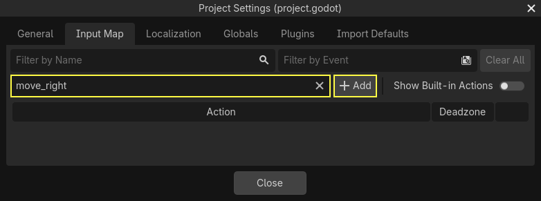
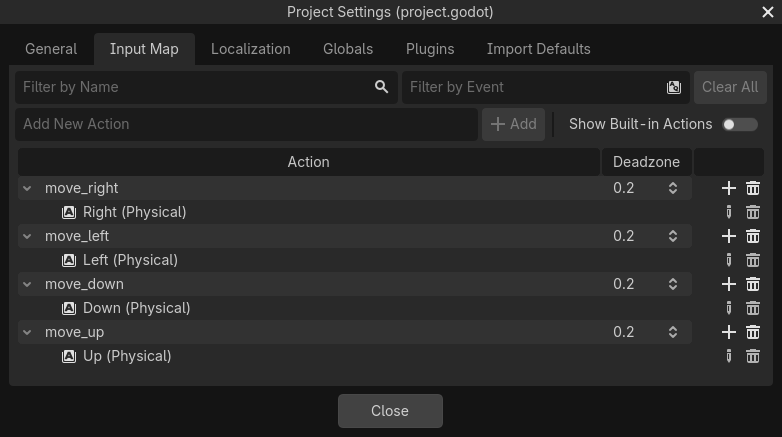
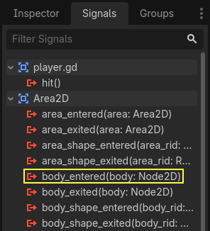

Coding the player
In this lesson, we'll add player movement, animation, and set it up to detect collisions.
To do so, we need to add some functionality that we can't get from a built-in
node, so we'll add a script. Click the Player node and click the "Attach
Script" button:

In the script settings window, you can leave the default settings alone. Just click "Create":
Note
If you're creating a C# script or other languages, select the language from the language drop down menu before hitting create.

Note
If this is your first time encountering GDScript, please read Scripting languages before continuing.
Start by declaring the member variables this object will need:
extends Area2D
@export var speed = 400 # How fast the player will move (pixels/sec).
var screen_size # Size of the game window.
using Godot;
public partial class Player : Area2D
{
[Export]
public int Speed { get; set; } = 400; // How fast the player will move (pixels/sec).
public Vector2 ScreenSize; // Size of the game window.
}
Using the export keyword on the first variable speed allows us to set
its value in the Inspector. This can be handy for values that you want to be
able to adjust just like a node's built-in properties. Click on the Player
node and you'll see the property now appears in the Inspector in a new section
with the name of the script. Remember, if you change the value here, it will
override the default value specified in the script (the script won't be modified).
Warning
If you're using C#, you need to (re)build the project assemblies whenever you want to see new export variables or signals. This build can be manually triggered by clicking the Build button at the top right of the editor.


Your player.gd script should already contain
a _ready() and a _process() function.
If you didn't select the default template shown above,
create these functions while following the lesson.
The _ready() function is called when a node enters the scene tree, which is
a good time to find the size of the game window:
func _ready():
screen_size = get_viewport_rect().size
public override void _Ready()
{
ScreenSize = GetViewportRect().Size;
}
Now we can use the _process() function to define what the player will do.
_process() is called every frame, so we'll use it to update elements of our
game, which we expect will change often. For the player, we need to do the
following:
Check for input.
Move in the given direction.
Play the appropriate animation.
First, we need to check for input - is the player pressing a key? For this game, we have 4 direction inputs to check. Input actions are defined in the Project Settings under "Input Map". Here, you can define custom events and assign different keys, mouse events, or other inputs to them. For this game, we will map the arrow keys to the four directions.
Click on Project -> Project Settings to open the project settings window and
click on the Input Map tab at the top. Type "move_right" in the top bar and
click the "Add" button to add the move_right action.

We need to assign a key to this action. Click the "+" icon on the right, to open the event manager window.

The "Listening for Input..." field should automatically be selected. Press the "right" key on your keyboard, and the menu should look like this now.

Select the "ok" button. The "right" key is now associated with the move_right action.
Repeat these steps to add three more mappings:
move_leftmapped to the left arrow key.move_upmapped to the up arrow key.And
move_downmapped to the down arrow key.
Your input map tab should look like this:

Click the "Close" button to close the project settings.
Note
We only mapped one key to each input action, but you can map multiple keys, joystick buttons, or mouse buttons to the same input action.
You can detect whether a key is pressed using Input.is_action_pressed(),
which returns true if it's pressed or false if it isn't.
func _process(delta):
var velocity = Vector2.ZERO # The player's movement vector.
if Input.is_action_pressed("move_right"):
velocity.x += 1
if Input.is_action_pressed("move_left"):
velocity.x -= 1
if Input.is_action_pressed("move_down"):
velocity.y += 1
if Input.is_action_pressed("move_up"):
velocity.y -= 1
if velocity.length() > 0:
velocity = velocity.normalized() * speed
$AnimatedSprite2D.play()
else:
$AnimatedSprite2D.stop()
public override void _Process(double delta)
{
var velocity = Vector2.Zero; // The player's movement vector.
if (Input.IsActionPressed("move_right"))
{
velocity.X += 1;
}
if (Input.IsActionPressed("move_left"))
{
velocity.X -= 1;
}
if (Input.IsActionPressed("move_down"))
{
velocity.Y += 1;
}
if (Input.IsActionPressed("move_up"))
{
velocity.Y -= 1;
}
var animatedSprite2D = GetNode<AnimatedSprite2D>("AnimatedSprite2D");
if (velocity.Length() > 0)
{
velocity = velocity.Normalized() * Speed;
animatedSprite2D.Play();
}
else
{
animatedSprite2D.Stop();
}
}
We start by setting the velocity to (0, 0) - by default, the player
should not be moving. Then we check each input and add/subtract from the
velocity to obtain a total direction. For example, if you hold right and
down at the same time, the resulting velocity vector will be (1, 1).
In this case, since we're adding a horizontal and a vertical movement, the
player would move faster diagonally than if it just moved horizontally.
We can prevent that if we normalize the velocity, which means we set its
length to 1, then multiply by the desired speed. This means no more fast
diagonal movement.
Tip
If you've never used vector math before, or need a refresher, you can see an explanation of vector usage in Godot at Vector math. It's good to know but won't be necessary for the rest of this tutorial.
We also check whether the player is moving so we can call play() or
stop() on the AnimatedSprite2D.
Tip
$ is shorthand for get_node(). So in the code above,
$AnimatedSprite2D.play() is the same as
get_node("AnimatedSprite2D").play().
In GDScript, $ returns the node at the relative path from the
current node, or returns null if the node is not found. Since
AnimatedSprite2D is a child of the current node, we can use
$AnimatedSprite2D.
Now that we have a movement direction, we can update the player's position. We
can also use clamp() to prevent it from leaving the screen. Clamping a
value means restricting it to a given range. Add the following to the bottom of
the _process function (make sure it's not indented under the else):
position += velocity * delta
position = position.clamp(Vector2.ZERO, screen_size)
Position += velocity * (float)delta;
Position = new Vector2(
x: Mathf.Clamp(Position.X, 0, ScreenSize.X),
y: Mathf.Clamp(Position.Y, 0, ScreenSize.Y)
);
Tip
The delta parameter in the _process() function refers to the frame length - the amount of time that the previous frame took to complete. Using this value ensures that your movement will remain consistent even if the frame rate changes.
Click "Run Current Scene" (F6, Cmd + R on macOS) and confirm you can move the player around the screen in all directions.
Warning
If you get an error in the "Debugger" panel that says
Attempt to call function 'play' in base 'null instance' on a null
instance
this likely means you spelled the name of the AnimatedSprite2D node
wrong. Node names are case-sensitive and $NodeName must match
the name you see in the scene tree.
Choosing animations
Now that the player can move, we need to change which animation the
AnimatedSprite2D is playing based on its direction. We have the "walk" animation,
which shows the player walking to the right. This animation should be flipped
horizontally using the flip_h property for left movement. We also have the
"up" animation, which should be flipped vertically with flip_v for downward
movement. Let's place this code at the end of the _process() function:
if velocity.x != 0:
$AnimatedSprite2D.animation = "walk"
$AnimatedSprite2D.flip_v = false
# See the note below about the following boolean assignment.
$AnimatedSprite2D.flip_h = velocity.x < 0
elif velocity.y != 0:
$AnimatedSprite2D.animation = "up"
$AnimatedSprite2D.flip_v = velocity.y > 0
if (velocity.X != 0)
{
animatedSprite2D.Animation = "walk";
animatedSprite2D.FlipV = false;
// See the note below about the following boolean assignment.
animatedSprite2D.FlipH = velocity.X < 0;
}
else if (velocity.Y != 0)
{
animatedSprite2D.Animation = "up";
animatedSprite2D.FlipV = velocity.Y > 0;
}
Note
The boolean assignments in the code above are a common shorthand for programmers. Since we're doing a comparison test (boolean) and also assigning a boolean value, we can do both at the same time. Consider this code versus the one-line boolean assignment above:
if velocity.x < 0:
$AnimatedSprite2D.flip_h = true
else:
$AnimatedSprite2D.flip_h = false
if (velocity.X < 0)
{
animatedSprite2D.FlipH = true;
}
else
{
animatedSprite2D.FlipH = false;
}
Play the scene again and check that the animations are correct in each of the directions.
Tip
A common mistake here is to type the names of the animations wrong. The
animation names in the SpriteFrames panel must match what you type in
the code. If you named the animation "Walk", you must also use a
capital "W" in the code.
When you're sure the movement is working correctly, add this line to
_ready(), so the player will be hidden when the game starts:
hide()
Hide();
Preparing for collisions
We want Player to detect when it's hit by an enemy, but we haven't made any
enemies yet! That's OK, because we're going to use Godot's signal
functionality to make it work.
Add the following at the top of the script. If you're using GDScript, add it after
extends Area2D. If you're using C#, add it after public partial class Player : Area2D:
signal hit
// Don't forget to rebuild the project so the editor knows about the new signal.
[Signal]
public delegate void HitEventHandler();
This defines a custom signal called "hit" that we will have our player emit
(send out) when it collides with an enemy. We will use Area2D to detect the
collision. Select the Player node and click the Signals tab next to the
Inspector tab to see the list of signals the player can emit:

Notice our custom "hit" signal is there as well! Since our enemies are going to
be RigidBody2D nodes, we want the body_entered(body: Node2D) signal. This
signal will be emitted when a body contacts the player. Click "Connect.." and
the "Connect a Signal" window appears.
Godot will create a function with that exact name directly in script for you. You don't need to change the default settings right now.
Warning
If you're using an external text editor (for example, Visual Studio Code), a bug currently prevents Godot from doing so. You'll be sent to your external editor, but the new function won't be there.
In this case, you'll need to write the function yourself into the Player's script file.

Note the green icon indicating that a signal is connected to this function; this does not mean the function exists, only that the signal will attempt to connect to a function with that name, so double-check that the spelling of the function matches exactly!
Next, add this code to the function:
func _on_body_entered(_body):
hide() # Player disappears after being hit.
hit.emit()
# Must be deferred as we can't change physics properties on a physics callback.
$CollisionShape2D.set_deferred("disabled", true)
// We also specified this function name in PascalCase in the editor's connection window.
private void OnBodyEntered(Node2D body)
{
Hide(); // Player disappears after being hit.
EmitSignal(SignalName.Hit);
// Must be deferred as we can't change physics properties on a physics callback.
GetNode<CollisionShape2D>("CollisionShape2D").SetDeferred(CollisionShape2D.PropertyName.Disabled, true);
}
Each time an enemy hits the player, the signal is going to be emitted. We need
to disable the player's collision so that we don't trigger the hit signal
more than once.
Note
Disabling the area's collision shape can cause an error if it happens
in the middle of the engine's collision processing. Using
set_deferred() tells Godot to wait to disable the shape until it's
safe to do so.
The last piece is to add a function we can call to reset the player when starting a new game.
func start(pos):
position = pos
show()
$CollisionShape2D.disabled = false
public void Start(Vector2 position)
{
Position = position;
Show();
GetNode<CollisionShape2D>("CollisionShape2D").Disabled = false;
}
With the player working, we'll work on the enemy in the next lesson.